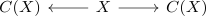
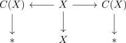
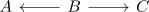

motivation: homotopy limits
Motivation
example Suspension
Let $X$ be a topological space. Then the suspension is defined as pushout of

But up to homotopy equivalence we may replace

which should be a natural isomorphism between diagrams of the form

But the pushout of the first is given by the suspension and the pushout of the second is the point. consider for example $X = * \coprod *$, then the suspension $\Sigma X \simeq S^1 \not\simeq *$ are not homotopy equivalent.